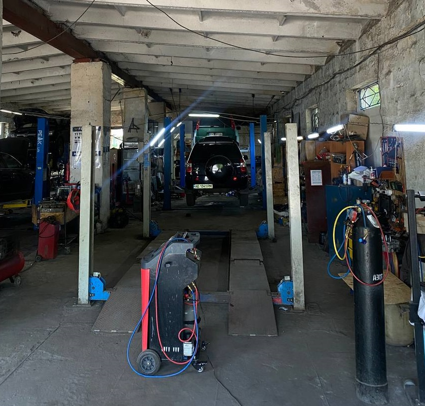

Автосервис «Каскад» –
профессиональный уход за вашим авто

СТО «Каскад» в Павлограде — это надежное место, где автомобили получают комплексное обслуживание от опытных мастеров. Мы специализируемся на ремонте авто любой сложности и техническом обслуживании транспортных средств всех марок. В нашем автосервисе вы можете рассчитывать на профессиональную диагностику авто, ремонт ходовой части, обслуживание тормозной системы, а также на услуги по ремонту двигателя, установке ГБО и заправке автокондиционеров.
Мы предлагаем комплексный подход: качественные запчасти, сертифицированные технические жидкости и высокоточное оборудование. Работаем в Павлограде с 2005 года и сотрудничаем с проверенными поставщиками — официальными дистрибьюторами, что гарантирует качество всех компонентов. Это позволяет не только выполнять качественный ремонт авто, но и предоставлять гарантию на все виды работ. Наши мастера всегда помогают подобрать оптимальное решение с учетом баланса цены и надежности, позволяя экономить без потери качества. Подробнее о деталях, запчастях и расходных материалах можно узнать в соответствующем разделе нашего сайта.
Выбирая автосервис «Каскад» в Павлограде, вы получаете не просто техническое обслуживание автомобиля — вы выбираете честный подход, профессионализм и полную ответственность за результат. Мы работаем с авто так, как будто это наши собственные: с уважением, заботой и вниманием к мелочам. В спорных ситуациях всегда ищем компромисс и открыты для обратной связи. Принимаем оплату наличными и картой, предоставляем консультации по ремонту, уходу, замене жидкостей и диагностике, а также действует система скидок для постоянных клиентов.
Каждый автовладелец, независимо от типа авто, рано или поздно сталкивается с необходимостью обращения в автосервис — будь то плановое техническое обслуживание или серьезный ремонт узлов. Машины, которые регулярно используются или, наоборот, долгое время стоят, одинаково нуждаются в проверке: изнашивается ходовая часть, стареют жидкости, снижаются характеристики тормозной системы и электроники. Именно поэтому регулярная диагностика авто — ключ к его долгой и безопасной эксплуатации.
СТО «Каскад» — это современный автосервис в Павлограде, где вы всегда можете рассчитывать на полный спектр услуг, внимательное отношение, быстрое выполнение работ и справедливую цену. Какой бы ни была причина обращения — мы всегда готовы вам помочь.